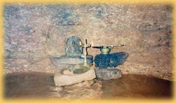

|
HISTORY
OF THE PLACE
|
|
The holy place Nellitheertha and the temple have a long and glorious history. Although the first recorded material mentioning Nellitheertha dates back to 1487 A.D, there is ample evidence available at the place to suggest that the temple existed much before that. At its glorious peak, there used to be daily festivities performed under the aegis of the ruler of Nellitheertha. From that grand state, the temple gradually declined and its existence itself was threatened towards the later part of the twentieth century. Since then, devotees and well wishers have got together to restore the temple to its previous grandeur. With the blessings of Shri Somanatha, the temple renovation work is now on in full swing. In the state of Karnataka and indeed in entire India, the South Kanara district occupies a unique place. The evergreen forests, amazing flora and fauna, the numerous temples and places of worship and monuments all make this district a huge attraction. The lifestyle of the people here exemplifies the concept of unity in diversity. For the people of Dakshina Kannada, art worship is a means of reaching the God and enriching the culture of the land. Naturally, therefore, one can observe the people seeing God in everything they do. Throughout the land, beautiful caves and lakes have become centers of spiritual and religious significance. Also, this land has given a multitude of scholars, artists, kings and other great contributors to the nation. Historically, the Nellitheertha region was under the administration of the Chowta family. The chowtas are a famous name in Tulu Naadu and it is said that the temple flourished under their administration and was a major center for religious and cultural activities under their reign. Even today, the descendants of the chowta clan take an active interest in the maintenance and development of the temple. There are some artifacts and archeological evidence available at the temple which point to a Jain interest and influence at the temple. These are evidence to suggest that the temple and the region was probably under the administration of Jain kings of the region. Click here for reading the amazing story of the birth of the place. |
|
Best
Viewed in 800x600 |